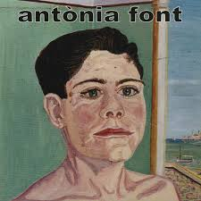

Alegria
Dos anys més tard, el 17 de febrer de 2001, van presentar el segon disc: A Rússia. Van optar en aquesta ocasió pel continuisme perquè l'anterior havia funcionat i la fórmula conreada els agradava, segons opina Pau Debon, el cantant del grup. Ja en aquests dos discos estan molt presents els elements sorprenents. El seu següent treball discogràfic, anomenat Alegria, va aparèixer al cap d'un any. Sense abandonar el seu estil, el to i el ritme de les seves cançons sofreix un canvi molt major entre el segon disc i aquest que entre el primer i el segon.
Discografia d'Antònia Font
La discografia d'Antònia Font, un grup de pop mallorquí actiu entre els anys 1997 i 2013 i des de 2021, consisteix en vuit àlbums d'estudi, un àlbum recopilatori, un àlbum en directe, un extended play, dos senzills, una pel·lícula i set videoclips.
- A Rússia
-
A Rússia és el segon àlbum del grup mallorquí Antònia Font, publicat l'any 2001. El disc conté un total de quinze cançons independent entre si. El disc inclou una dedicatòria en un to surrealista: "...a la gent de Rússia, que hi fa tan fred, és tan gran i és tan enfora que me vénen ganes de plorar...".
Cançons destacades: Canta, Camp de maduixes i fa calor.
- Taxi
-
Taxi és el quart disc del grup mallorquí Antònia Font, publicat l'any 2004. La temàtica és de ciència-ficció i de futur, de viatges espacials en transbordadors. Es va convertir en el disc més extens que havien fet fins al moment, ja que incloïa 17 cançons; més endavant, en el seu darrer disc com a banda, editarien Vostè és aquí amb 40 temes.
Cançons destacades: Robot, Multicinemes i Vitamina sol.
